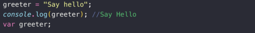

Java Script
Saat ve Tarih
Nasıl Yapılır ?
innerHTML = Date()">Saat ve tarihi Göster < p id="date"> < / p >
Alert
Alert sayfada kullanıcıya uyarı veya mesaj vermek için kullanılır...
Nasıl Yapılır ?
var değişkeni
Bir değişken tanımlamak için kullanılır,
var ile tanımlanan değişken tekrar tanımlanabilir ve tanımlanan değer sonradan değiştirilebilir.
Nasıl Yapılır ?
x = 5;
y = 6;
document.getElementById("demo").innerHTML = x + y;
< /script>
let keywords
let ile tanımlanan tekrar tanımlanamaz fakat tanımlanan değer sonradan değiştirilebilir.
const keywords
Sabit bir değer tanımlamak için kullanılır,
const ile tanımlanan değişken tekrar tanımlanamaz ve değiştirilemez.
Ampul Tasarımı

Nasıl Yapılır ?
('myImage').src='açıkampul.png'">Işığı Aç < button style="background-color:black;color:white" onclick="document.getElementById
('myImage').src='kapalıampul.png'">Işığı Kapat < img id="myImage" src="kapalıampul.png" style="width:150px">
Console.log()
Kullanımı
Hata ayıklama bölümündeki konsola yazmak için kullanılır...
Cevabı görmek için "F12" tuşuna basıp "Console" bölümüne giriniz...
Nasıl Yapılır ?
Atama Operatörü
( = ) "Atama" yapmak için kullanılır.
( == ) "Eşittir" anlamına gelir.
Hoisting
Değişkeni önce kullanıp sonra tanımlama işlemine denir, 
let ve const için geçerli değildir.
Nasıl Yapılır ?
Document.write() Kullanımı
Bir JavaScript kodunu denemek için kullanılır, html kodlarını göstermez...
Nasıl Yapılır ?
Windows.print()
Kullanımı
Sayfayı yazdırmak için kullanılır...
Nasıl Yapılır ?
Yorum Ekleme
Yorum satırı ekleme:
( // yorum // )
Çok satırlı yorum ekleme:
( /* yorum
yorum */ )